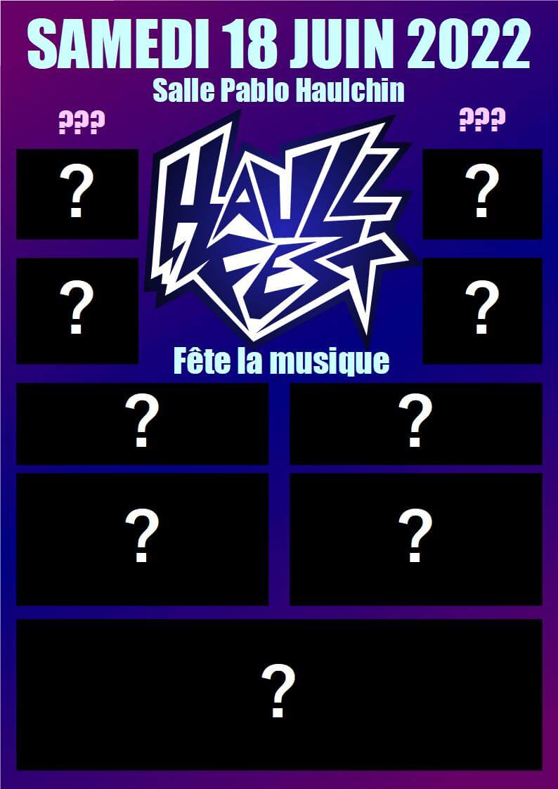
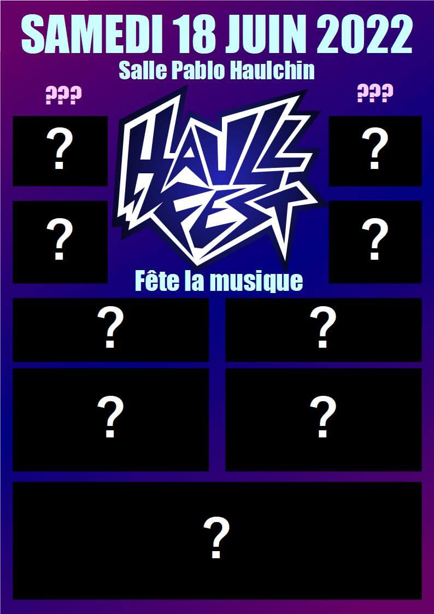

Contact
07 82 02 30 86
parsycharlestom@gmail.com

Charles Parsy
Créateur de logo et d'identité numérique
Développeur de sites web, d'applications et de logiciels
|
|
Mes projets
|
|
V
07 82 02 30 86
parsycharlestom@gmail.com
Créateur de logo et d'identité numérique
Développeur de sites web, d'applications et de logiciels
|
|
|
|
V

Taxi Navette Service est un taxi qui cherchait un site pour promouvoir ses services de transport de personnes avec le meilleur référencement possible.
L'ARM Haulchin est une association qui aide les groupes locaux à répéter et à se produire.
L'un des plus gros projet de l'ARM en termes de communication a été de créer sa propre marque de bière


L'ARM, m'a amené à réaliser des affiches, flyers, des t-shirts,...


Le Haullfest est un festival rock/métal qui a eu lieu à Haulchin de 2022 à 2024. J'ai contribué à ce projet en créant leur identité numérique (logo, site, affiche, flyers)
Ci-dessous quelques affiches que j'ai réalisées


 



L'ASHHV une association sportive et handisportive de Valenciennes. Pour les 50 ans de l'association et à l'occasion d'un tournoi internationnal, j'ai réalisé un site
L'OstéoQuiz est un Quiz public en ligne permettant de s'entrainer sur des questions d'ostéopathie pour animaux. Il possède une interface administrateur permettant de gérer les questions.
La première application que j'ai créé est un outil permettant de vérifier la validité d'un mot au Scrabble. Pratique pour vérifier la validité d'un mot rapidement.
La deuxième application est un métronome lumineux. Beaucoup de batteurs dans un groupe jouent au click (avec un métronome sonore qui leur permet de rester en rythme). L'intérêt d'un métronome lumineux est de pouvoir choisir de respecter ou non le rythme en regardant ou non son téléphone et rester à l'écoute des autres membres. De telles applications existent déjà, mais la fonctionnalité est payante et l'affichage pas idéal.
Parmi mes autres projets, il y a des logos, des flyers,...